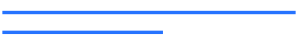

UX

Jeg lavede et t-shirt brand ved navn Graphit, som fokuserer på grafiske t-shirts. Jeg skabte et brand, hvor jeg stræbte efter at skabe en helhed i alt fra designet af t-shirts til udtrykket på hjemmesiden.
I UX-temaet fik jeg indsigt i brugervenlighedsoptimering gennem forskning og forskellige metoder. Jeg anvendte relevante designprincipper baseret på brugertests. Den endelige prototype blev udviklet i XD ved at implementere min forskning og testresultater.
For at fuldføre opgaven brugte jeg:
Adobe XD, Adobe Photoshop, Adobe Illustrator
Prototype af websitet "Graphit" lavet i XD.
Process
Jeg udførte forskellige former for research som en start på opgaven. Dette inkluderede en survey, interviews og desk research..
Jeg ønskede, at mit website skulle have et markant visuelt udtryk. Derfor valgte jeg at skabe en rød tråd gennem hele sitet, som var inspireret af grafikken på mine t-shirts. Jeg valgte jordnære og behagelige farver, som var i harmoni med temaet, for at skabe en sammenhængende og indbydende æstetik.
Jeg brugte Adobe XD til at oprette en prototype af websitet. Mit fokus var at skabe en hjemmeside, der var nem at navigere, hvor brugerne kunne bevæge sig rundt uden besvær.
Jeg lavede mockups i Photoshop med min egen grafik, som skulle udgøre indholdet på min side.
Jeg fik mange værdifulde indsigter, da vi udførte en "5-act test" og mine klassekammerater gav mig konstruktiv feedback. Det hjalp mig med at forstå, hvordan min præsentation eller projekt kunne forbedres, og det gav mig nye perspektiver og idéer til at videreudvikle mit arbejde. Jeg værdsatte virkelig den interaktion og læring, der kom fra denne feedback-proces.